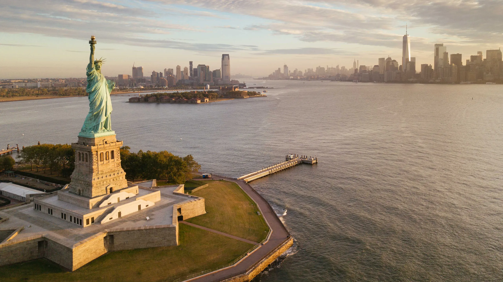
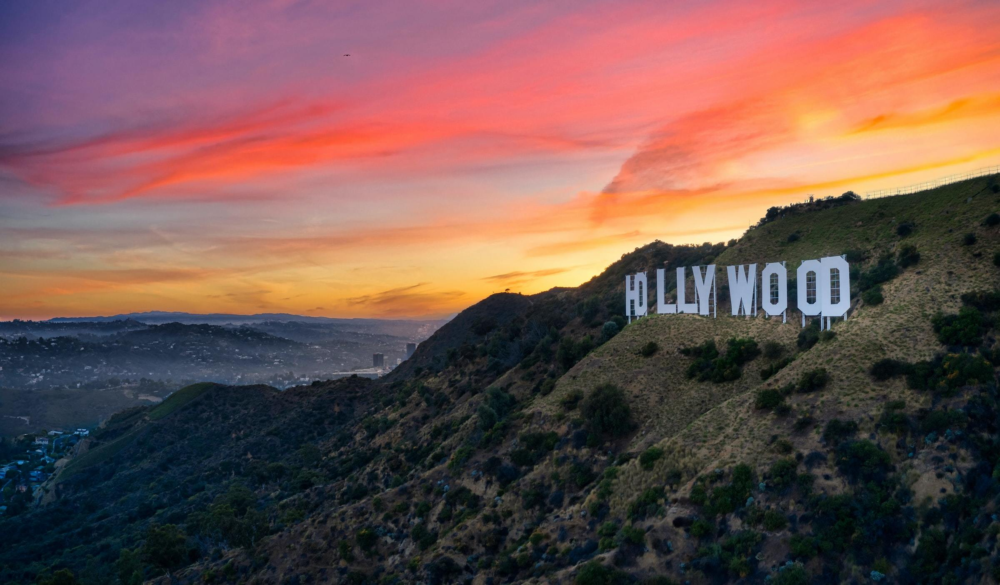

Statue Of Liberty
New York

Hollywood Sign
Los Angeles

Golden Gate Bridge
San Francisco
The Statue of Liberty (Liberty Enlightening the World; French: La Liberté éclairant le monde) is a colossal neoclassical sculpture on Liberty Island in New York Harbor in New York City, in the United States. The copper statue, a gift from the people of France to the people of the United States, was designed by French sculptor Frédéric Auguste Bartholdi and its metal framework was built by Gustave Eiffel. The statue was dedicated on October 28, 1886.
The statue is a figure of Libertas, a robed Roman liberty goddess. She holds a torch above her head with her right hand, and in her left hand carries a tabula ansata inscribed JULY IV MDCCLXXVI (July 4, 1776 in Roman numerals), the date of the U.S. Declaration of Independence. A broken shackle and chain lie at her feet as she walks forward, commemorating the recent national abolition of slavery. After its dedication, the statue became an icon of freedom and of the United States, seen as a symbol of welcome to immigrants arriving by sea.
The Hollywood Sign (originally the Hollywoodland Sign) is an American landmark and cultural icon overlooking Hollywood, Los Angeles, California. It is situated on Mount Lee, in the Beachwood Canyon area of the Santa Monica Mountains. Spelling out the word Hollywood in 45 ft (13.7 m)-tall white capital letters and 350 feet (106.7 m) long, it was originally created in 1923 as a temporary advertisement for a local real estate development, but due to increasing recognition the sign was left up, and replaced in 1978 with a more durable all-steel structure. Among the most well-known landmarks in both California and the United States, the sign makes frequent appearances in popular culture, particularly in establishing shots for films and television programs set in or around Hollywood. Signs of similar style, but spelling different words, are frequently seen as parodies. The Hollywood Chamber of Commerce holds trademark rights to the Hollywood Sign.
The Golden Gate Bridge is a suspension bridge spanning the Golden Gate, the one-mile-wide (1.6 km) strait connecting San Francisco Bay and the Pacific Ocean. The structure links the U.S. city of San Francisco, California—the northern tip of the San Francisco Peninsula—to Marin County, carrying both U.S. Route 101 and California State Route 1 across the strait. It also carries pedestrian and bicycle traffic, and is designated as part of U.S. Bicycle Route 95. Being declared one of the Wonders of the Modern World by the American Society of Civil Engineers, the bridge is one of the most internationally recognized symbols of San Francisco and California. It was initially designed by engineer Joseph Strauss in 1917. The Frommer's travel guide describes the Golden Gate Bridge as "possibly the most beautiful, certainly the most photographed, bridge in the world." At the time of its opening in 1937, it was both the longest and the tallest suspension bridge in the world, with a main span of 4,200 feet (1,280 m) and a total height of 746 feet (227 m).